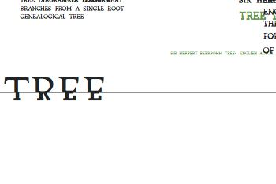
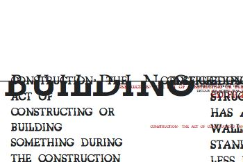

Hybrid
Hybrid is a font that can automatically style whatever word is given to it. It uses custom DrawBot scripts that access Wordnet, Wikipedia and Google to abstract the meaning of any word to "stronk" or "weak", which it uses to create its design.
The font itself consists of two halves. The weighing of a certain word influences how the relationship between the two halves work.
 Weak trees |
 Strong buildings |